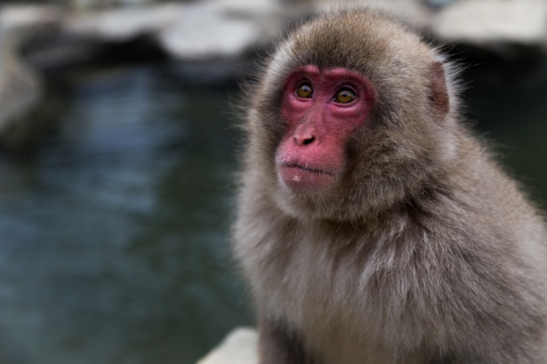

Merkmale
Die Größe der Affen schwankt zwischen dem Zwergseidenäffchen mit einer Kopf-Rumpf-Länge von rund 12 bis 15 Zentimetern und einem Gewicht von rund 100 Gramm, und den Gorillas, die stehend bis zu 1,75 Meter hoch werden und ein Gewicht von 200 Kilogramm erreichen können, sowie den Menschen mit einer Körpergröße von durchschnittlich 1,60 bis 1,80 Metern, in Einzelfällen auch mehr als 2,00 Metern. Einige Arten haben einen ausgeprägten Geschlechtsdimorphismus, wobei die Männchen mancher Arten doppelt so schwer wie die Weibchen sein können und sich auch in der Fellfarbe unterscheiden können. Ihr Körper ist meist mit Fell bedeckt, dessen Färbung von schwarz über verschiedene Braun- und Grautöne bis zu weiß variieren kann. Die Handflächen und Fußsohlen sind meistens unbehaart, manchmal auch das Gesicht. Die Augen sind groß und nach vorn gerichtet, womit ein guter Gesichtssinn einhergeht. Als Trockennasenprimaten ist ihr Geruchssinn hingegen unterentwickelt.
Da die meisten Arten Baumbewohner sind, sind ihre Gliedmaßen an die Lebensweise angepasst. Die Hinterbeine sind fast immer länger und stärker als die Vorderbeine (Ausnahmen sind die Gibbons und die nicht-menschlichen Menschenaffen) und tragen den größeren Anteil der Bewegung. Die Finger und Zehen sind an das Greifen angepasst. Merkmal aller Arten (mit Ausnahme des Menschen) ist die opponierbare (den anderen Zehen gegenüberstellbare) Großzehe. Auch der Daumen ist manchmal opponierbar, bei Arten, die sich hangelnd durch die Äste bewegen, ist er jedoch zurückgebildet. Die jeweils fünf Strahlen der Gliedmaßen (Finger und Zehen) tragen in den meisten Fällen Nägel statt Krallen. Der Schwanz ist meist lang und dient vorrangig als Balanceorgan. Einige Neuweltaffen haben einen Greifschwanz ausgebildet. Bei den Menschenartigen und einigen anderen Arten ist es allerdings zu einer Rückbildung des Schwanzes gekommen.
Arten
Zuerst stellt sich natürlich die Frage wie viele Affenarten es auf der Welt gibt. Es sind sehr viele, etwas mehr als 250.
Die Affenarten lassen sich in zwei Gruppen einteilen. Einige Arten sind die amerikanischen Affen, die anderen die Affen in Afrika und Asien. Die Affen in Afrika und Asien gab es zuerst. Vermutlich sind die Affen auf Treibgut von Afrika nach Amerika gelangt als die beiden Kontinente nach viel enger zusammen waren. Man bezeichnet die Affenarten in Amerika "Neuweltaffen", die Affenarten in Afrika und Asien als "Altweltaffen". Circa die Hälfte aller Affenarten weltweit sind Neuweltaffen, die anderen Altweltaffen.

Japanischer Schnee-Affe
Nahrung
Die Mehrzahl der Affenarten ist vorrangig Pflanzenfresser. Früchte stellen vielfach den Hauptbestandteil der Nahrung dar, ergänzt werden sie durch Blätter, Blüten, Knollen, Pilze, Samen, Nüsse, Baumsäfte und andere Pflanzenteile. Viele Arten sind jedoch Allesfresser, die neben pflanzlicher auch tierische Nahrung zu sich nehmen, insbesondere Insekten, Spinnen, Vogeleier und kleine Wirbeltiere.
Auch der Mensch ist von Natur aus ein Allesfresser. Spätestens vor 450.000 Jahren begann er Jagd auf größere Tiere zu machen. Je nach Lebensraum überwog beim Menschen die pflanzliche oder die tierische Ernährung.